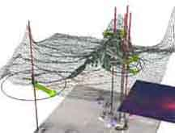
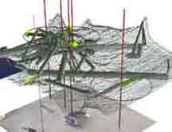

|
|  |
|  |
inoutSite
In the
installation of the "inoutsite” project the frequency of visits
to the site under surveillance was analysed and then translated into
image and sound. The resulting virtual three-dimensional shapes can
be considered as the first virtual architecture.Inoutsite I and II show
the statistics of space usage.The arrows show the direction of movement,
the lines are the traces of persons in the space. The height of the
net, which floats like a virtual roof above the scene under observation,
indicates the frequency of people walking through this space. The more
frequently the space is entered the lower the net sinks.